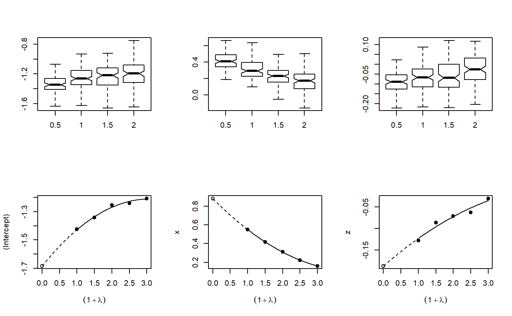
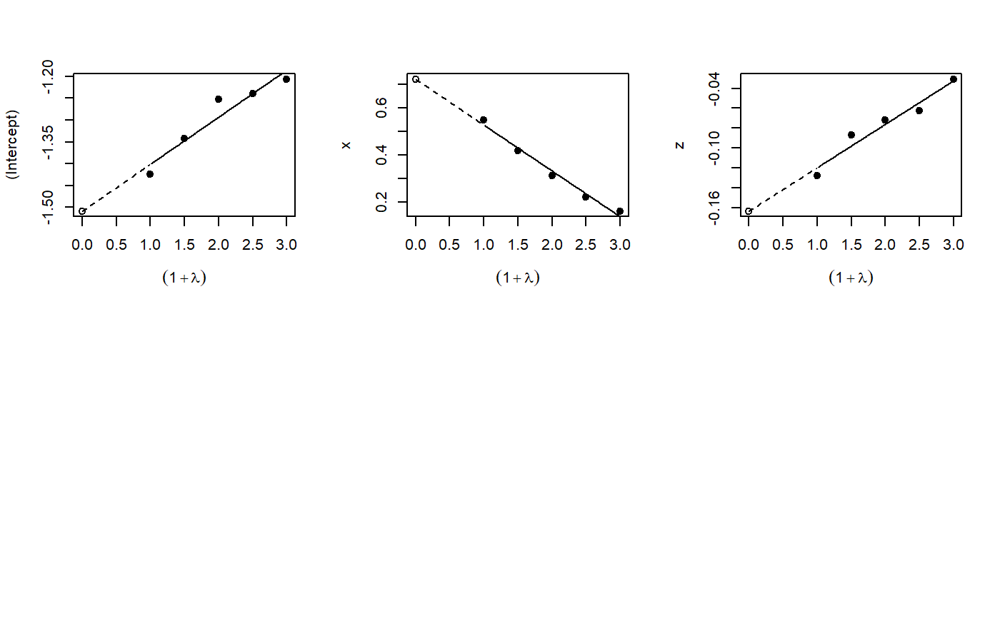

Implementation of the misclassification MCSIMEX algorithm as described by Küchenhoff, Mwalili and Lesaffre.
mcsimex(model, SIMEXvariable, mc.matrix, lambda = c(0.5, 1, 1.5, 2), B = 100, fitting.method = "quadratic", jackknife.estimation = "quadratic", asymptotic = TRUE) # S3 method for mcsimex plot(x, xlab = expression((1 + lambda)), ylab = colnames(b[, -1]), ask = FALSE, show = rep(TRUE, NCOL(b) - 1), ...) # S3 method for mcsimex predict(object, newdata, ...) # S3 method for mcsimex print(x, digits = max(3, getOption("digits") - 3), ...) # S3 method for summary.mcsimex print(x, digits = max(3, getOption("digits") - 3), ...) # S3 method for mcsimex summary(object, ...) # S3 method for mcsimex refit(object, fitting.method = "quadratic", jackknife.estimation = "quadratic", asymptotic = TRUE, ...)
| model | the naive model, the misclassified variable must be a factor |
|---|---|
| SIMEXvariable | vector of names of the variables for which the MCSIMEX-method should be applied |
| mc.matrix | if one variable is misclassified it can be a matrix. If more than one variable is misclassified it must be a list of the misclassification matrices, names must match with the SIMEXvariable names, column- and row-names must match with the factor levels. If a special misclassification is desired, the name of a function can be specified (see details) |
| lambda | vector of exponents for the misclassification matrix (without 0) |
| B | number of iterations for each lambda |
| fitting.method |
|
| jackknife.estimation | specifying the extrapolation method for jackknife
variance estimation. Can be set to |
| asymptotic | logical, indicating if asymptotic variance estimation should
be done, the option |
| x | object of class 'mcsimex' |
| xlab | optional name for the X-Axis |
| ylab | vector containing the names for the Y-Axis |
| ask | ogical. If |
| show | vector of logicals indicating for which variables a plot should be produced |
| … | arguments passed to other functions |
| object | object of class 'mcsimex' |
| newdata | optionally, a data frame in which to look for variables with which to predict. If omitted, the fitted linear predictors are used |
| digits | number of digits to be printed |
An object of class 'mcsimex' which contains:
corrected coefficients of the MCSIMEX model,
the MCSIMEX-estimates of the coefficients for each lambda,
the values of lambda,
the naive model,
the misclassification matrix,
the number of iterations,
the model object of the extrapolation step,
the fitting method used in the extrapolation step,
name of the SIMEXvariables,
the function call,
the jackknife variance estimates,
the model object of the variance extrapolation,
the data set for the extrapolation,
the asymptotic variance estimates,
all estimated coefficients for each lambda and B,
If mc.matrix is a function the first argument of that function must
be the whole dataset used in the naive model, the second argument must be
the exponent (lambda) for the misclassification. The function must return
a data.frame containing the misclassified SIMEXvariable. An
example can be found below.
Asymptotic variance estimation is only implemented for lm and glm
The loglinear fit has the form g(lambda, GAMMA) = exp(gamma0 + gamma1 * lambda).
It is realized via the log() function. To avoid negative values the
minimum +1 of the dataset is added and after the prediction later substracted
exp(predict(...)) - min(data) - 1.
The 'log2' fit is fitted via the nls() function for direct fitting of
the model y ~ exp(gamma.0 + gamma.1 * lambda). As starting values the
results of a LS-fit to a linear model with a log transformed response are used.
If nls does not converge, the model with the starting values is returned.
refit() refits the object with a different extrapolation function.
plot: Plots of the simulation and extrapolation
predict: Predict with mcsimex correction
print: Nice printing
print: Print summary nicely
summary: Summary for mcsimex
refit: Refits the model with a different extrapolation function
Küchenhoff, H., Mwalili, S. M. and Lesaffre, E. (2006) A general method for dealing with misclassification in regression: The Misclassification SIMEX. Biometrics, 62, 85 -- 96
Küchenhoff, H., Lederer, W. and E. Lesaffre. (2006) Asymptotic Variance Estimation for the Misclassification SIMEX. Computational Statistics and Data Analysis, 51, 6197 -- 6211
Lederer, W. and Küchenhoff, H. (2006) A short introduction to the SIMEX and MCSIMEX. R News, 6(4), 26--31
x <- rnorm(200, 0, 1.142) z <- rnorm(200, 0, 2) y <- factor(rbinom(200, 1, (1 / (1 + exp(-1 * (-2 + 1.5 * x -0.5 * z)))))) Pi <- matrix(data = c(0.9, 0.1, 0.3, 0.7), nrow = 2, byrow = FALSE) dimnames(Pi) <- list(levels(y), levels(y)) ystar <- misclass(data.frame(y), list(y = Pi), k = 1)[, 1] naive.model <- glm(ystar ~ x + z, family = binomial, x = TRUE, y = TRUE) true.model <- glm(y ~ x + z, family = binomial) simex.model <- mcsimex(naive.model, mc.matrix = Pi, SIMEXvariable = "ystar") op <- par(mfrow = c(2, 3)) invisible(lapply(simex.model$theta, boxplot, notch = TRUE, outline = FALSE, names = c(0.5, 1, 1.5, 2))) plot(simex.model)# NOT RUN { if(require(MASS)) { yord <- cut((1 / (1 + exp(-1 * (-2 + 1.5 * x -0.5 * z)))), 3, ordered=TRUE) Pi3 <- matrix(data = c(0.8, 0.1, 0.1, 0.2, 0.7, 0.1, 0.1, 0.2, 0.7), nrow = 3, byrow = FALSE) dimnames(Pi3) <- list(levels(yord), levels(yord)) ystarord <- misclass(data.frame(yord), list(yord = Pi3), k = 1)[, 1] naive.ord.model <- polr(ystarord ~ x + z, Hess = TRUE) simex.ord.model <- mcsimex(naive.ord.model, mc.matrix = Pi3, SIMEXvariable = "ystarord", asymptotic=FALSE) } # }# example for a function which can be supplied to the function mcsimex() # "ystar" is the variable which is to be misclassified # using the example above# NOT RUN { my.misclass <- function (datas, k) { ystar <- datas$"ystar" p1 <- matrix(data = c(0.75, 0.25, 0.25, 0.75), nrow = 2, byrow = FALSE) colnames(p1) <- levels(ystar) rownames(p1) <- levels(ystar) p0 <- matrix(data = c(0.8, 0.2, 0.2, 0.8), nrow = 2, byrow = FALSE) colnames(p0) <- levels(ystar) rownames(p0) <- levels(ystar) ystar[datas$x < 0] <- misclass(data.frame(ystar = ystar[datas$x < 0]), list(ystar = p1), k = k)[, 1] ystar[datas$x > 0] <- misclass(data.frame(ystar = ystar[datas$x > 0]), list(ystar = p0), k = k)[, 1] ystar <- factor(ystar) return(data.frame(ystar))} simex.model.differential <- mcsimex(naive.model, mc.matrix = "my.misclass", SIMEXvariable = "ystar") # }